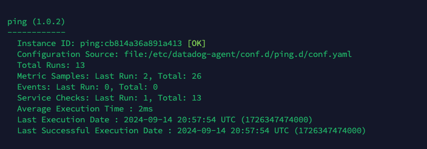

2024/09/09
My work Log
T O C
D. Mobility Express -
Syslog転送設定
i. Docker-composeとかやりすぎて、ゴミを一掃したいとき
ii. 読み書き権限問題。サービスをRoot権限で起動したいとき
1.
Proxmox
A. ゲストOSに仮想化を公開する必要がある場合
1. 仮想マシン作成時に以下の設定を実施
BIOS：OVMF(UEFI)
プロセッサ：host
2. ubuntu
A. Ubuntu インストールディスク作成 on Mac
参考
Ø
MacでUbuntu Server ImageをダウンロードしてUSBに設定する方法
B. Ubuntu 2404 server install
1. 論理ボリュームの選択 <- LVMを無効化
2. UFWをインストール
3. Remote Desktop設定
参考
C. Cockpit install
1. KVMのインストール
2. Cockpitのインストール
3. Firewall設定（0.0.0.0 を変更して、アクセス元IPを制限する）
sudo ufw allow from 0.0.0.0/0 to any port 9090 proto tcp
4. Cockpitへのアクセス
5. 仮想ブリッジの作成
参考
Ø Ubuntu 24.4で自宅サーバ（KVMとCockpitで仮想サーバ編）[2/6]
D. Docker install
手順通りにコマンドを打つだけ
参考
Ø Ubuntu 22.04でDocker、DockerComposeをインストールする
3.
Fortigate
A. ルーティング設定
FortiGateでは、デフォルトで直接接続間はルーティングされるので、I Pv4ポリシでセグメント間通信を許可すればO K
1. IPv4ポリシ作成
B. Syslog転送設定
GUIで設定
参考
Ø FortiGateにおける複数のSyslogサーバへログ転送を行う設定について
C. SNMP設定
GUIで設定
4.
Cisco
A. L2Switch - IP Address
1. Vlan interfaceに対して、ip Addressを割り振るだけ
#conf t
#interface vlan 11
#Ip address 192.168.11.251 255.255.255.0
#no shutdown
B. L2Switch - Syslog転送設定
参考
Ø Cisco 製品にSNMP (v1, v2c) / Syslog の設定を追加する (Cisco Catalyst, ASA, Router )
C. L2Switch - SNMP設定
1. SNMPポーリング設定を一行追加するだけ
#conf t
#snmp-server community SNMPCommunity ro
D. Mobility Express - Syslog転送設定
E. Mobility Express - SNMP設定
1. SNMPポーリング設定を一行追加するだけ
GUIで設定

5.
Juniper
A. Syslog転送設定
B. SNMP設定
6.
Datadog
A. Agent 操作コマンド
|
説明 |
コマンド |
|
Agent をサービスとして起動 |
sudo service datadog-agent start |
|
サービスとして実行中の Agent の停止 |
sudo service datadog-agent stop |
|
サービスとして実行中の Agent の再起動 |
sudo service datadog-agent restart |
|
Agent サービスのステータス |
sudo service datadog-agent status |
|
実行中の Agent のステータスページ |
sudo datadog-agent status |
|
フレアの送信 |
sudo datadog-agent flare |
|
コマンドの使用方法の表示 |
sudo datadog-agent --help |
|
チェックの実行 |
sudo -u dd-agent -- datadog-agent check
<CHECK_NAME> |
参考
B. SNMPモニタリング
1. sudo nano /etc/datadog-agent/conf.d/snmp.d/conf.yaml
init_config:
loader: core # use core check implementation of SNMP integration. recommended
use_device_id_as_hostname: true # recommended
instances:
- ip_address: '192.168.11.1'
community_string: 'Private01' # enclose with single quote
tags:
- 'host_name_TDD1:FortiGate50E'
- 'ip_address_TDD1:192.168.11.1'
ping:
enabled: true # (default false) enable the ping check
linux: # (optional) Linux specific configuration
use_raw_socket: true # (optional, default false) send pings using a raw socket (see step 3 above)
- ip_address: '192.168.11.251'
community_string: 'Private01' # enclose with single quote
tags:
- 'host_name_TDD1:C2960L'
- 'ip_address_TDD1:192.168.11.251'
ping:
enabled: true # (default false) enable the ping check
linux: # (optional) Linux specific configuration
use_raw_socket: true # (optional, default false) send pings using a raw socket (see step 3 above)
参考
Ø ネットワークデバイスから SNMP メトリクスを収集 - Ping
C. Ping Check
1. Agent Integrationのインストール
2. conf.yaml作成
sudo nano /etc/datadog-agent/conf.d/ping.d/conf.yaml
init_config:
instances:
## @param host - string - required
## Host to ping
#
- host: 192.168.11.1
## @param collect_response_time - boolean - optional - default: false
## Reports network.ping.response_time in ms if true
#
collect_response_time: true
## @param timeout - float - optional - default: 4.0
## Timeout in seconds
#
timeout: 5.0
## @param tags - list of key:value elements - optional
## List of tags to attach to every metric, event and service check emitted by this integration.
##
## Learn more about tagging: https://docs.datadoghq.com/tagging/
#
tags:
- 'host_name_TDD1:FortiGate50E'
- 'ip_address_TDD1:192.168.11.1'
3. Agent Restart
失敗の場合
成功の場合

参考
D. デバイストポロジー
参考
7.
Zabbix
8.
New relic
9.
ログ監視
<前提条件>
rsyslog server宛にsyslogを送付している（Fortigateなどから）
A. rsyslog
i. Install
UDPポート514番でリッスンして外部からのログを受け付ける設定
外部からのアクセスの場合は /var/log/remote にログを保存する設定
ufwは有効化しない
ii. IPアドレスごとにログファイルを振り分ける設定
送信ホストのIPアドレスごとに自動的にファイルを作成し、ログの書き込みファイルを振り分けるの設定
1. rsyslogの設定ファイルを編集: /etc/rsyslog.conf ファイルを編集します。
sudo nano /etc/rsyslog.conf
2. 以下の行を追加してください。
$RepeatedMsgReduction off
これにより、同じメッセージが繰り返し書き込まれないようになります。
3. ログの振り分け設定: /etc/rsyslog.d/ ディレクトリ内に、送信ホストごとにログを振り分ける設定ファイルを作成します。例えば、/etc/rsyslog.d/20-remote-hosts.conf という名前のファイルを作成します。
4. sudo nano /etc/rsyslog.d/20-remote-hosts.conf に以下を記述
template(name="HostBasedLog" type="string" string="/var/log/%FROMHOST-IP%.log")
*.* ?HostBasedLog
この設定では、%FROMHOST-IP% プロパティを使って送信ホストのIPアドレスを取得し、それをログファイル名に含めます。
5. rsyslog の再起動: 設定を反映させるために、rsyslog を再起動します。
sudo service rsyslog restart
これで、送信ホストのIPアドレスごとに自動的にファイルを作成し、ログの書き込みファイルを振り分ける設定が完了しました。
参考
B. Graylog
i. Install
Docker install
ii. Syslog取り込み設定
Syslogサーバ(UDP)のInput設定
参考
Ø ログ分析管理OSS(Graylog-6.0.3)のDocker実行Tips
Ø Getting Started - Graylog v1.x
C. rsyslog -> Graylogへのログ転送
i. rsyslogの設定[mT1]
1. sudo vim /etc/rsyslog.d/50-forward.conf
$ModLoad imudp
$UDPServerRun 514
$ActionQueueType LinkedList # use asynchronous processing
$ActionQueueFileName srvrfwd # set file name, also enables disk mode
$ActionResumeRetryCount -1 # infinite retries on insert failure
$ActionQueueSaveOnShutdown on # save in-memory data if rsyslog shuts down
*.* @192.168.11.204:5140;RSYSLOG_SyslogProtocol23Format
★＠一つ：UDP, @二つ：TCP
参考
Ø fluentdのsyslogプラグインを使ってsyslogプロトコルでログを受け取る
10.
Tips!
A. Docker
i. Docker-composeとかやりすぎて、ゴミを一掃したいとき
https://docs.docker.jp/config/pruning.html
既存のコンテナ～使われていないイメージすべてを削除するには、 -a フラグを使います。
$ docker image prune -a
WARNING! This will remove all images without at least one container associated to them.
Are you sure you want to continue? [y/N] y
ii. 読み書き権限問題。サービスをRoot権限で起動したいとき
https://www.oresamalabo.net/entry/2019/03/09/120747
解決策
→ td-agentサービス を root ユーザーで起動する。
td-agent のログを確認すると、`Permission denied` というメッセージが毎秒出力されている事がわかり、実行ユーザーの権限に問題があるのではないかという仮説が立てられます。